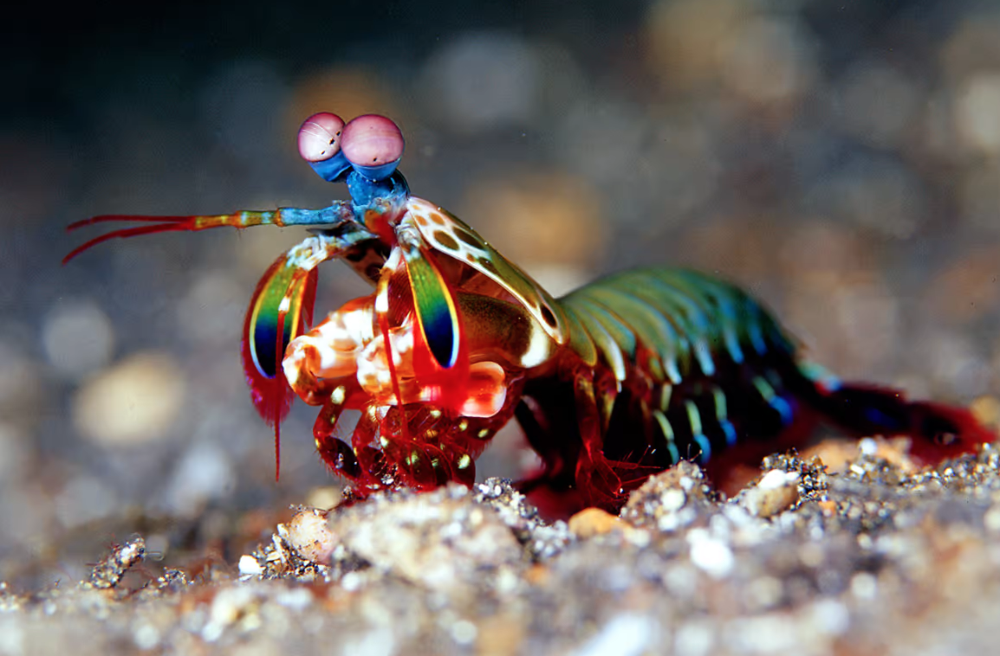

Fatos sobre o Stomatopoda
Descrição
O Stomatopoda Odontodactylus scyllarus é caracterizado por ser extremamente agressivo, presente há 400 milhões de anos atrás.
Atualmente, seu habitat se encontra dentro da região mostrada conforme figura abaixo: